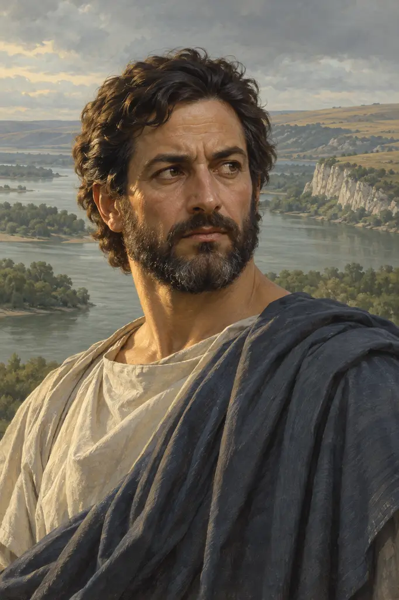
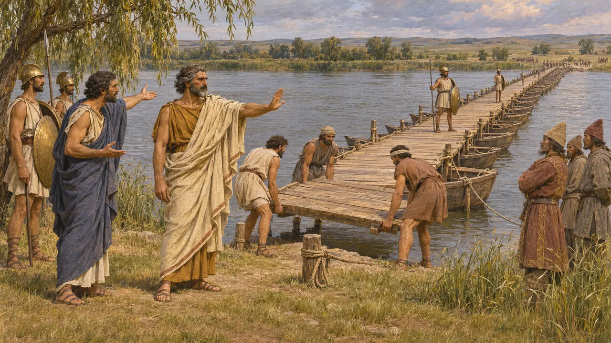
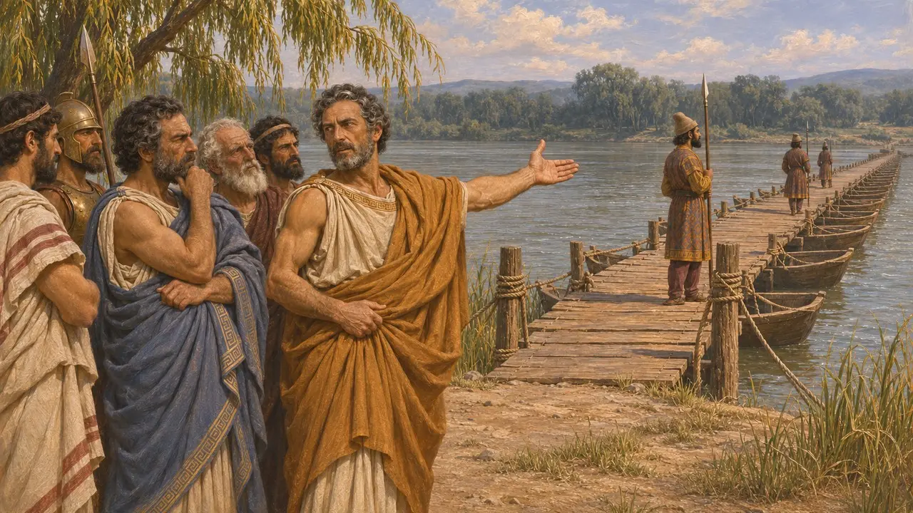
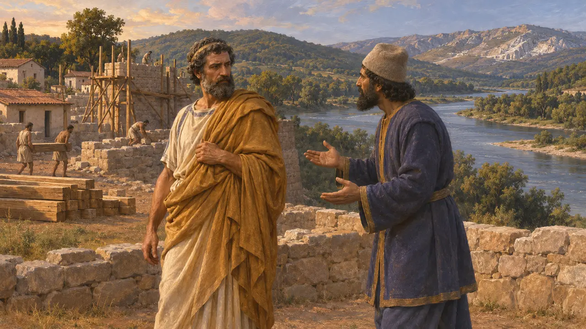
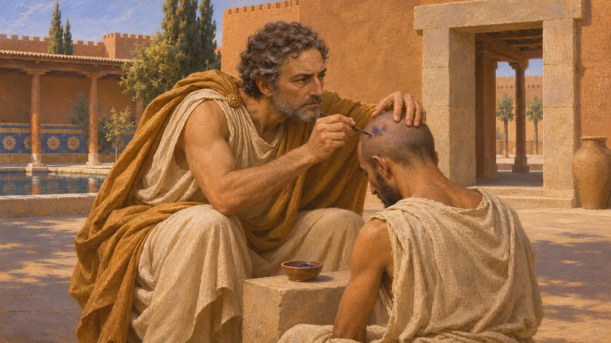
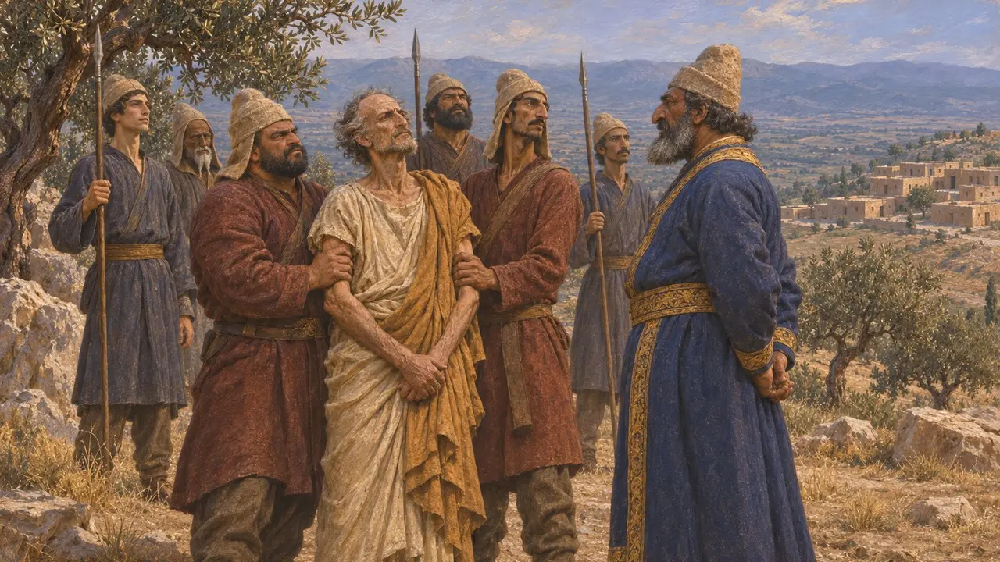

Histiaios von Milet
Griechischer Tyrann von Milet unter Dareios, Hüter der Istros-Brücke, gestorben 494 v. Chr. oder 493 v. Chr.
Im Spiel: Level 6: Die Schiffbrücke, Level 7: Sardes brennt
Histiaios war unter Dareios Tyrann von Milet, der führenden griechischen Stadt Ioniens. Herodot macht ihn zu dem Mann, der um 513 v. Chr. die Brücke des Königs über den Istros rettete, und später zu einem der Anstifter des Ionischen Aufstands von 499 v. Chr. Belohnt, in Susa an der Seite des Königs festgehalten, beargwöhnt und schließlich hingerichtet, zeigt er, wie Persien griechische Städte durch treue einheimische Tyrannen beherrschte – und wie zerbrechlich diese Treue sein konnte.
Im Spiel: Die Chronik des Spiels stellt ihn als Hüter der Istrosbrücke dar und wiederholt Herodots Geschichte von der Tätowierung. Sie datiert seinen Tod auf 494 v. Chr., doch Herodot setzt seine Gefangennahme nach dem Fall Milets an, sodass er auch 493 v. Chr. gestorben sein könnte.

Hüter der Brücke
Antiker BerichtHerodot berichtet, dass Dareios um 513 v. Chr. gegen die Skythen über den Istros zog und die ionischen Tyrannen zurückließ, um die Schiffbrücke zu bewachen. Als die Skythen sie drängten, sie abzubrechen, sprach sich Miltiades von der Chersones dafür aus, doch Histiaios hielt dagegen, jeder Tyrann beherrsche seine Stadt nur dank der Macht des Dareios. Die Ionier bauten zum Schein nur das nördliche Ende ab und hielten den Übergang für den zurückweichenden König offen.
Herodotus 4.136-141

Treuer Tyrann oder spätere athenische Erzählung
UmstrittenIn Herodots Version ist Histiaios der treue Mann des Königs und Miltiades ein verhinderter Befreier. Viele Historiker vermuten, dass die Rolle des Miltiades erst später in Athen so erzählt wurde, vielleicht als man ihm dort den Prozess machte, um ihn vom Vorwurf reinzuwaschen, Persien gedient zu haben. Er blieb danach noch jahrelang auf der Chersones. Kein persischer Text nennt Histiaios, daher ist sein Werdegang fast ausschließlich aus Herodot bekannt, der ihm mit Bewunderung und Argwohn zugleich begegnet.
Herodotus 4.137, 6.104; P. Briant, From Cyrus to Alexander, 2002

Myrkinos und die Vorladung nach Susa
Antiker BerichtZum Lohn schenkte ihm Dareios Myrkinos am Strymon in Thrakien, einen Ort nahe bei Holz- und Silbervorkommen. Laut Herodot warnte der Feldherr Megabazos, ein kluger Grieche, der einen solchen Ort befestige, sei eine Gefahr. Dareios rief Histiaios daher nach Sardes und nahm ihn dann als Ratgeber und Tischgenossen des Königs mit nach Susa. Sein Vetter und Schwiegersohn Aristagoras regierte an seiner statt Milet.
Herodotus 5.11, 5.23-25, 5.30

Die Botschaft auf dem Kopf des Sklaven
Spätere LegendeHerodot berichtet, Histiaios, der Susa unbedingt verlassen wollte, habe einem vertrauten Sklaven den Kopf geschoren und ihm eine Botschaft auf die Kopfhaut geschrieben. Er wartete, bis das Haar nachgewachsen war, und schickte den Sklaven dann zu Aristagoras mit der Weisung, ihm den Kopf erneut zu scheren; die Botschaft rief zum Aufstand auf. Herodot räumt ein, dass Aristagoras nach seinem gescheiterten Angriff auf Naxos eigene Beweggründe hatte, und die Erzählung trägt die Züge einer Listgeschichte, die sich nicht überprüfen lässt.
Herodotus 5.35

Rückkehr, Seeraub und Tod
Antiker BerichtAls der Aufstand ausbrach, überredete Histiaios Dareios, ihn nach Westen zu schicken, um Ionien zu beruhigen. In Sardes sagte ihm der Satrap Artaphernes, er habe den Schuh genäht und Aristagoras habe ihn angezogen. Histiaios floh nach Chios, wurde aus Milet ausgesperrt und kaperte von Byzantion aus Schiffe. Nach dem Fall Milets nahm ihn der persische Befehlshaber Harpagos bei Atarneus gefangen, und er wurde in Sardes gepfählt. Dareios, darüber verärgert, ließ sein Haupt ehrenvoll bestatten.
Herodotus 5.106-107, 6.1-5, 6.26-30
Quellen
- Herodotus, Histories, books 4-6
- P. Briant, From Cyrus to Alexander, 2002
- O. Murray, The Ionian Revolt, Cambridge Ancient History IV, 1988